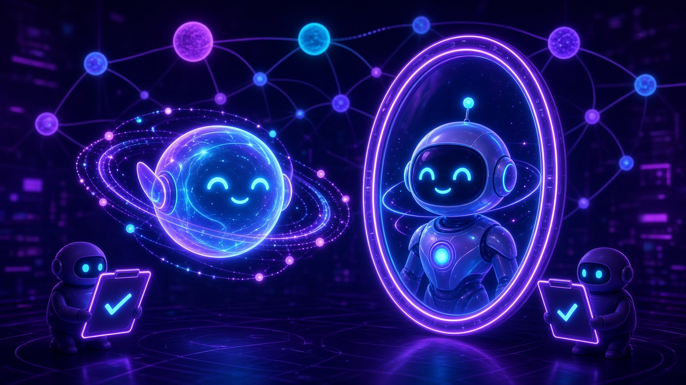

Ep3/5 · Ana, the self-reflecting agent — NuN Nexus of Unity

Deep in a purple network of glowing nodes, a soft, smiling orb of light, wrapped in orbit rings, floats before a tall holographic mirror. In the reflection stands a sleeker robot version of itself, same smile, sharper form. On either side, two small helper bots hold up clipboards, each showing a single checkmark: reviewed, approved. No scoreboard, no numbers, just a quiet moment of looking inward before acting. This is Ana in the NuN Nexus: agent self-reflection and system self-reflection feeding self-evolution, so an AI checks its own work and grows from what it sees before it ever replies.